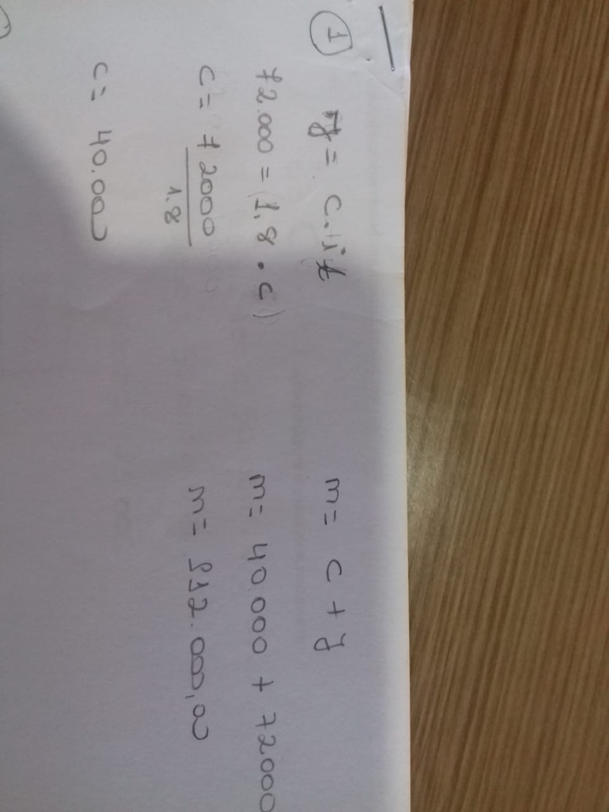
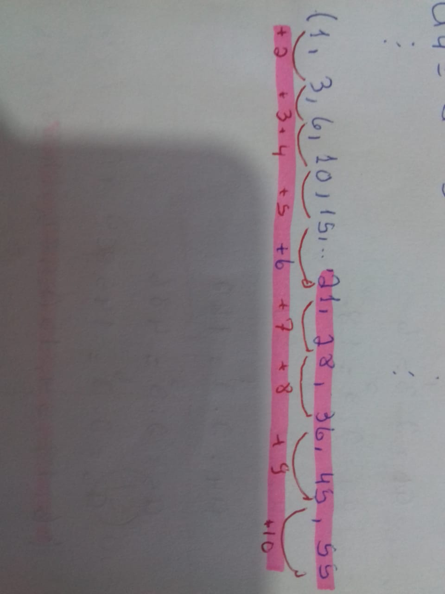
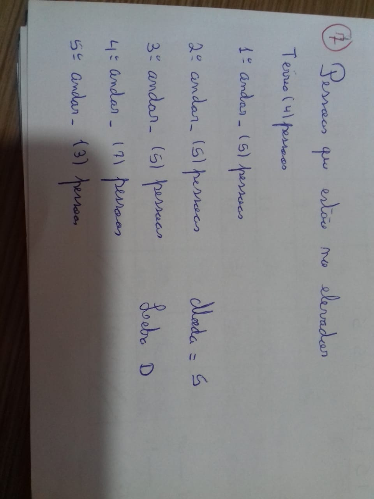

2.1 Matemática Financeira::
Esse sistema de matemática financeira tem por objetivo estudar a evolução do valor do dinheiro ao longo do tempo, ela conpoe coceitos basicos como: capital inicial, principal ou valores presente, prazo, juro, taxa de juros, montante ou valor futuro, regime de capitalização, e capitalização simples, ela é usada muito no nosso cotidiano. Exe: Sabendo-se que certo capital, aplicado durante 10 semestre, a taxa de 18% ao semetre rende R 72.000,00 de juros, determinar o montante. EX:

Conforme foto anexa da atividade, devo fazer o cálculo usando a fórmula para cada situação. Para o meu melhor aprendizado procurei assistir as aulas da professora Valéria, assisti alguns vídeos no Youtube.
2.2 Progressões:
Dentro das progressões é estudada as sequências numéricas, progressão aritméticas, e progressão geométricas. Progressão aritmética remete a um desenvolvimento gradual de um processo ou uma sucessão. Em matemática, dizemos que esta sucessão é uma sequência. Podemos exemplificar algumas sequências conhecidas: Sequência das eleições para o Executivo a partir de 1994. Progressão geométrica é uma sequência numérica que possui uma razão fixa q e, a partir do primeiro termo, os termos são cálculos pela razão q vezes o seu antecessor. Ex:

Não gostei muito dessa atividade achei um pouco complicada, e pouco usada no nosso cotidiano, tive dificuldade para entender mesmo usando os recursos de vídeos postados pela professora Valéria.
2.3 Estátistica Básica:2
Na estatística básica é estuda tabelas de distribuição de frequências, gráficos, medidas de posição ou tendência central, medidas de dispersão e uso de planilhas eletrônicas, usamos para situações no campo da matemática que relaciona fatos e números em que há um conjunto de métodos que nos possibilita coletar dados e analisá-los, assim sendo possível realizar alguma interpretação deles. Ex:

Essa atividade achei muito complicada busquei assistir vídeos no Youtube, da professora Valéria e pedi ajuda da minha antiga professora.